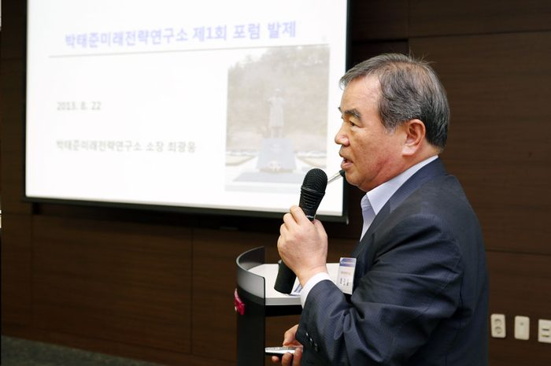
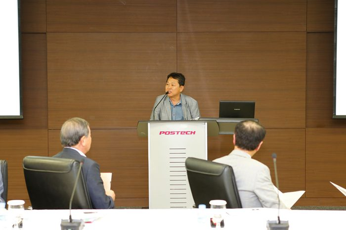
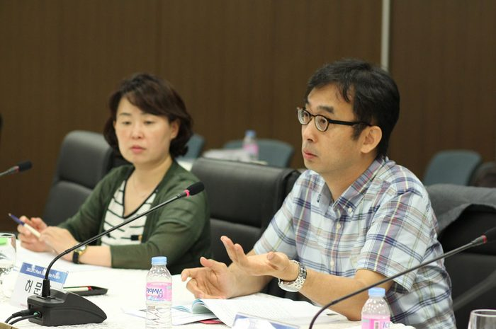
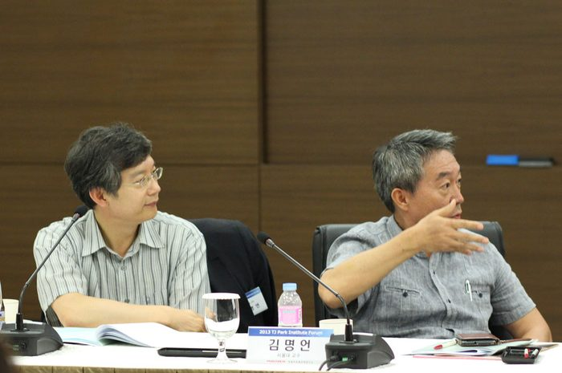
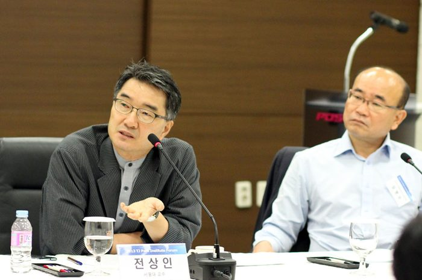
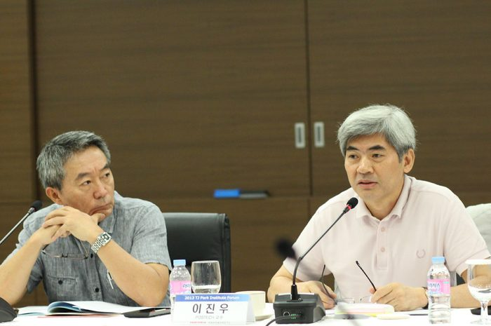
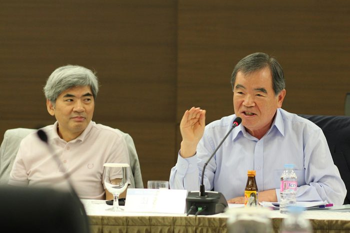
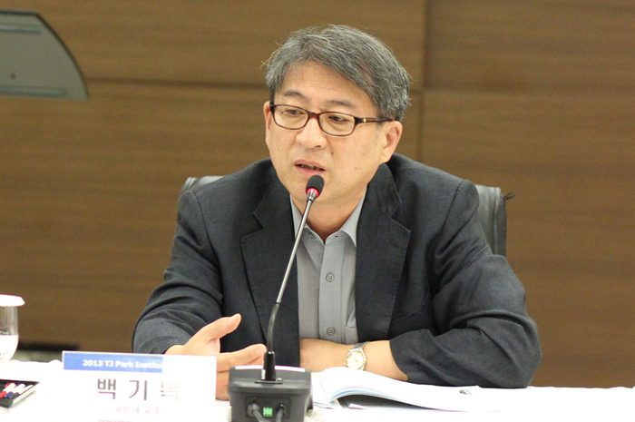
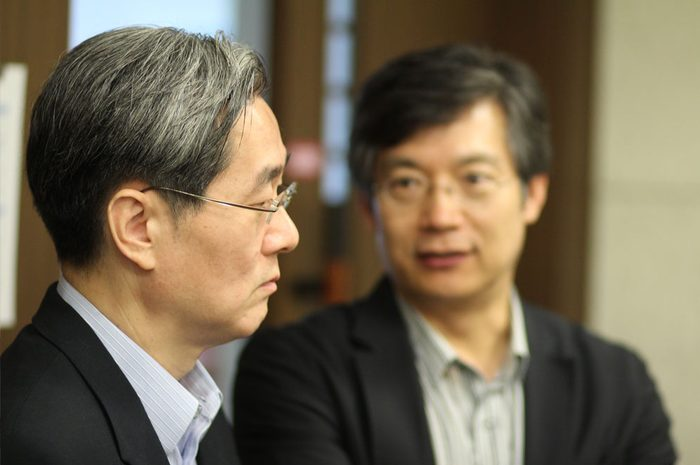
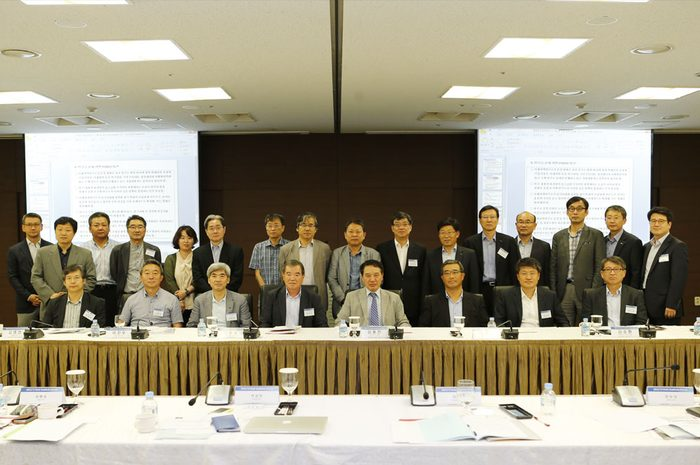

행사개요
사 명 :
박태준미래전략연구소
회 포럼
주 제 :
박태준미래전략연구소의
나아갈 길'
기 간 :
2013
22
) ~ 23(
) 2
일간
장 소 :
포스코 국제관
중회의실
프로그램
2013-8-22
시간
프로그램
14:30~15:05
환영인사 및 연구소 설립의의(총장)
15:05~15:20
연구소 설립 경과보고 (이대환 작가)
15:20~15:35
박태준연구ž미래전략연구 발제 (소장)
5:35~15:50
Coffee Break
15:50~18:30
토론
2013-8-23
시간
프로그램
08:30~09:00
Coffee Break
09:00~12:00
종합토론 및 정리
참석자
박태준미래전략연구소
- 최광웅 소장, 이대환 작가
포스코 및 유가족
- 박성빈 TransLink Capital 대표, 황은연
POSCO
부사장, 전우식
POSCO
전무,
양원준
POSCO
상무, 강태영
POSCO
경영연구소장, 임병수
POSCO
경영연구소 수석연구원
포스텍 교수
김용민
POSTECH
총장, 김무환
POSTECH
기획처장, 김승환
POSTECH
연구처장, 이진우
POSTECH
교수
인문사회학부장
), 손영우
POSTECH
교수(창의 IT융합)
외부 초청교수
- 이승주 KDI국제대학원교수 / 경영학(경영전략) ,
허문구 경북대교수 / 경영학(전략 및 조직관리),
백기복 국민대교수 / 경영학(경영연구소장),
전상인 서울대교수, 한국미래학회 회장 / 환경계획학,
방민호 서울대교수 / 국어국문학,
김병연 서울대교수 / 경제학,
김명언 서울대교수 / 심리학,
이현숙 서울대교수 / 생명과학,
최 동주 숙명여대교수 / 정치경제학,
김왕배 연세대교수 / 사회학,
최진덕 한국학중앙연구원교수 / 철학










